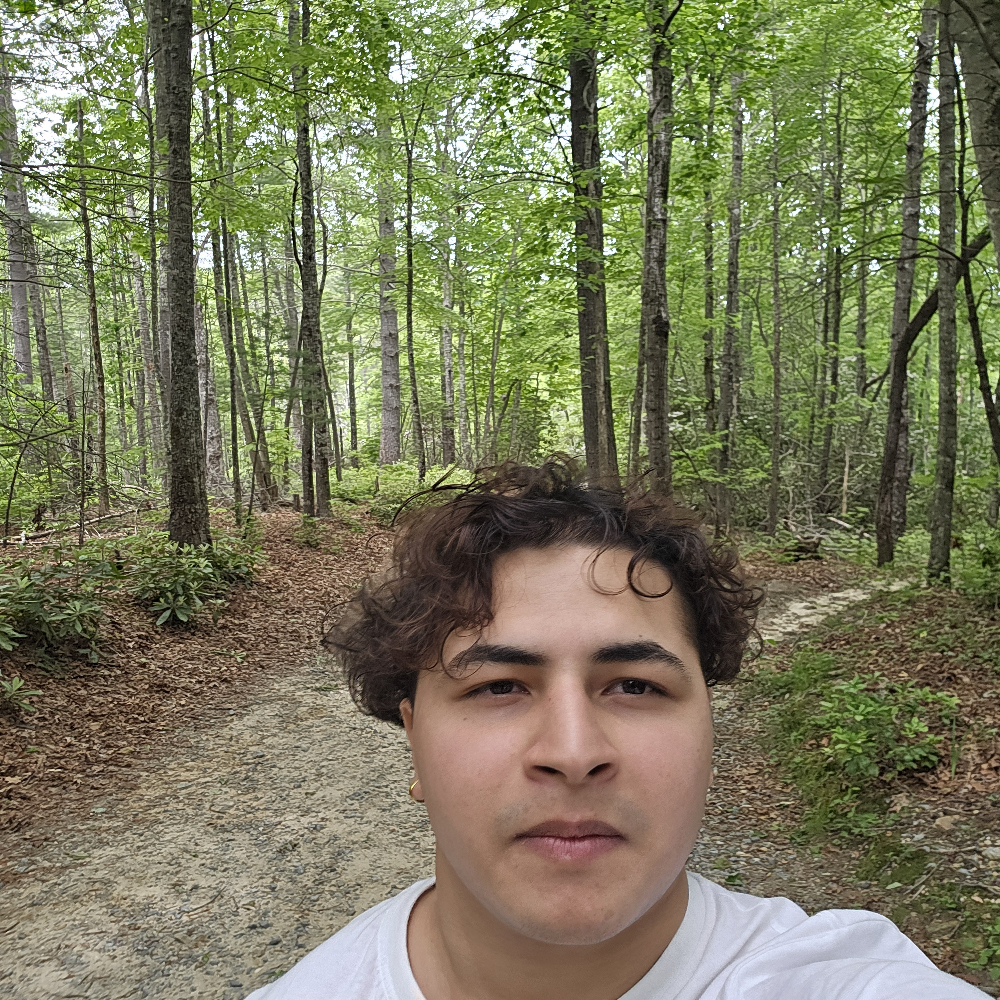

Data Engineer and Full Stack Developer at the School of Polymer Science & Engineering, building Django-React systems and ETL workflows that process 50,000+ records. I focus on scalable software, secure data governance, and practical AI-enabled solutions for research and industry.
I am currently working as a Data Engineer and Full Stack Developer at The University of Southern Mississippi, where I design enterprise data models, automate ETL workflows, and build full-stack systems using Django, React, PostgreSQL, Python, and SQL.
Alongside my role, I am an AI4ALL Ignite Fellow focused on applied AI, LLM workflows, and LangChain integrations. As a Computer Science student with a 4.0 GPA, I have earned the President's List for four consecutive semesters.

Manage enterprise data models and ETL workflows using Python and SQL to query, clean, and synthesize 50,000+ records into a custom research database.
Built and deployed a Django backend, React frontend, and PostgreSQL stack to streamline bulk record uploads and cut manual upload time by 97%, while documenting tests, errors, and weekly progress for stakeholders.
Project Link: polymermorphology.org
Selected for a highly competitive accelerator and dedicating 10+ hours per week to generative AI, LLMs, and prompt engineering research.
Prototype AI workflows with Python and LangChain, while exploring enterprise integration patterns for cloud-based AI agents.
Collaborate with Mississippi ITS, AWS, and MAIN to develop and present a high-impact AI project at a statewide showcase.
Recognized for strong teamwork and a commitment to responsible AI infrastructure and impactful large-scale AI solutions.
Mentored 150+ students from multiple disciplines to strengthen their mathematical aptitude for higher education.
Demonstrated teamwork, strong communication, and attention to detail in weekly meetings to help maintain an effective learning environment.
Relevant Coursework: Database Management Systems, Intro to AI, Machine Learning, Object-Oriented Programming, Algorithms, Computer Systems, Operating Systems, Secure Software Development, Computer Networks, Linear Algebra, Probability & Statistics, Data Governance Concepts
Coursework: Computer Science, Mathematics, English, Physics
Designed a human-in-the-loop AI system using AWS Lambda, Django, and Amazon Textract to automate nursing transcript verification and reduce document processing to a standardized 2 to 4 minutes.
Developed a Python logic engine with 13 licensure rules to detect fraud patterns, preserve PII security, and power a React dashboard with 100% decision transparency.
Architected a scalable Next.js + React interface and achieved a 98/100 Lighthouse performance score through optimized rendering and frontend performance tuning.
Designed PostgreSQL data models for 1,000+ concurrent transactions and implemented strict Row Level Security (RLS) for secure data isolation aligned with PII/PHI standards.
Built an autonomous reporting and deployment infrastructure using GitHub Actions and Docker, implementing unit tests and integration checks on every commit.
Developed a Flask backend to handle augmented reality workflows, API requests, and data validation, ensuring 99.9% uptime and reliable service delivery for users.
Architected a full-stack Django and React application with PostgreSQL on GCP to automate bulk data workflows for polymer research and reduce manual upload time by 97%.
Engineered Python and SQL ETL pipelines to clean, label, and synthesize 50,000+ records, then delivered analytics dashboards and documentation workflows for scientists.
Engineering a cross-platform desktop application in modern C++ and Qt 6 for polymer image analysis and visualization, supporting advanced segmentation, synthetic image generation, and publication-ready chart exports for microscopy workflows. Architecting modular analysis pipelines with batch processing, plugin-ready extensibility, and interactive GUI built on MVC/MVVM design.
A web app that has resources on how to pass the computerized license test of Mississippi, featuring practice tests and study materials.
Built a web app that attempts to replicate human emotions while conversing with an AI chat bot, creating more engaging AI interactions.
I also create visual stories through photography and cinematic edits, capturing portraits, events, and campus life with a clean, narrative-driven style.
Loading latest visuals...
I'm always interested in discussing computer science, research opportunities, or potential collaborations. Feel free to reach out!